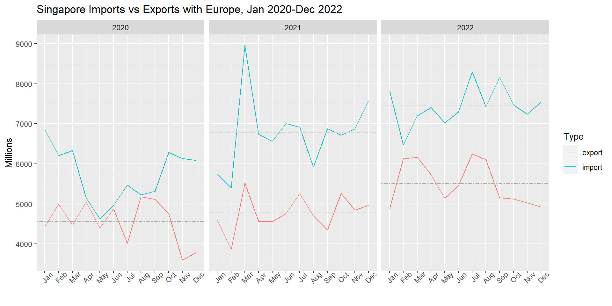
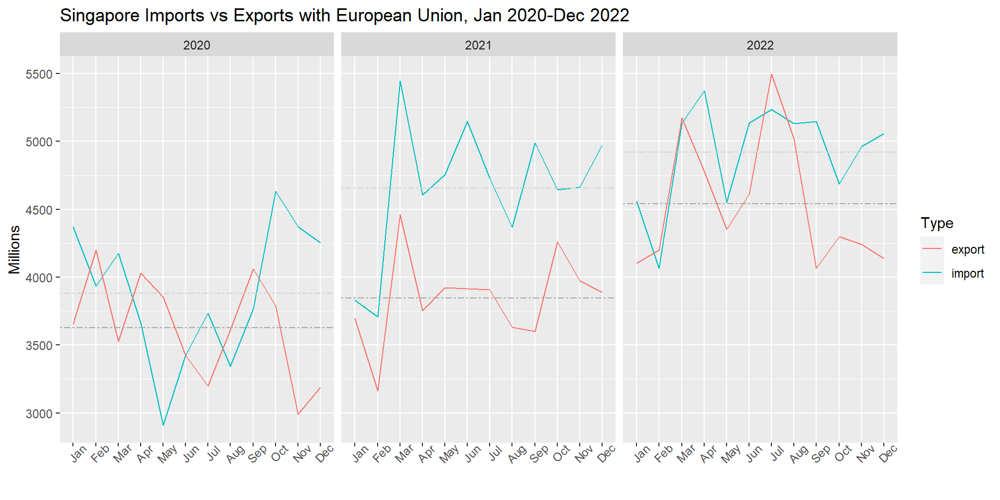
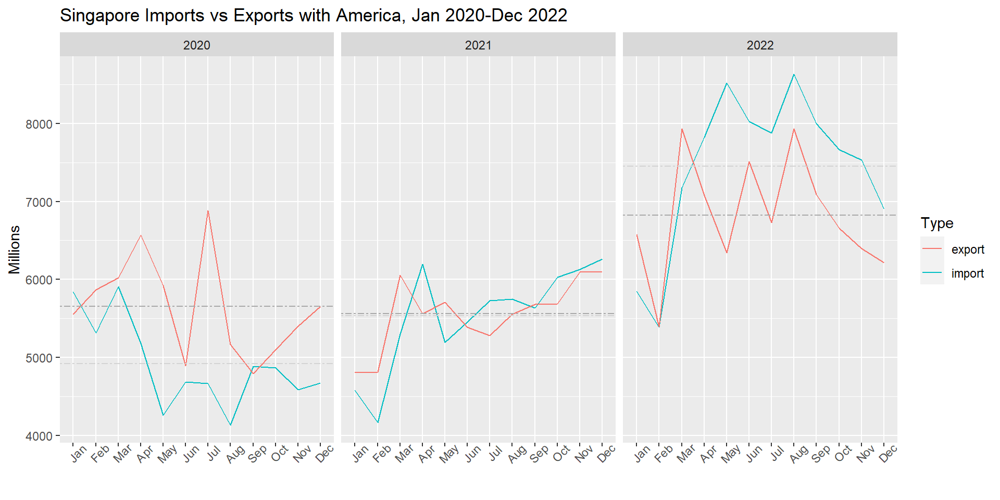
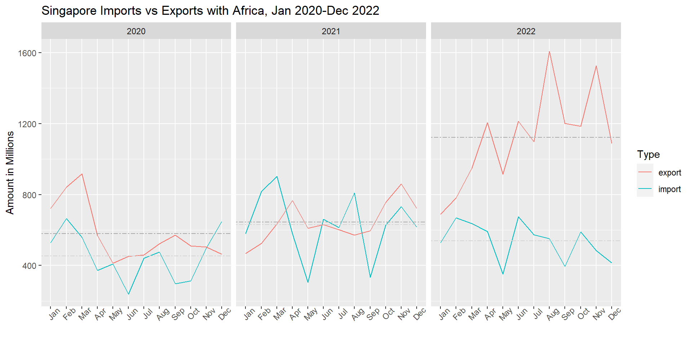

Show the code
pacman::p_load(scales, viridis, lubridate, ggthemes, readxl, knitr, data.table, CGPfunctions, ggHoriPlot,tidyverse,gganimate,skimr,kableExtra,patchwork,png,gifski)YSYK
February 26, 2023
The task is to analyse the impact of COVID-19 as well as the global economic and political dynamic on Singapore bi-lateral trade (import, export) from 2020 to 2022. The various visualisation methods such as interactive visualisation are used to enhance user’s data discovery experiences.
The data is downloaded from Merchandise Trade by Region/Market section from Department of Statistics, Singapore. The data include both import and export data from Jan 1976 to Jan 2023. Since the visualisation focus on Jan 2020 to Dec 2022, the imported data has been cleaned up to contain data from 2020 to 2022 only. The data is separated into two excel file called; imports and exports.
Install and load all the relevant libraries to use for visualization.
The raw data frames are created by reading excel files. Then, Year-Month variable is changed into year and month format and the values in all the countries’ column are adjusted accordingly based on value indicator in individual column’s name. The final step is to drop the value indicator from the columns’s name.
importraw <- read_xlsx("data/imports.xlsx") %>%
mutate(`Year-Month`=ym(`Year-Month`)) %>%
mutate_at(vars(contains('Thousand Dollars')), ~ (. *1000)) %>%
mutate_at(vars(contains('Million Dollars')), ~ (. *1000000))
colnames(importraw) <- gsub(" (Thousand Dollars)", "", colnames(importraw), fixed = TRUE)
colnames(importraw) <- gsub(" (Million Dollars)", "", colnames(importraw), fixed = TRUE)
exportraw <- read_xlsx("data/exports.xlsx") %>%
mutate(`Year-Month`=ym(`Year-Month`)) %>%
mutate_at(vars(contains('Thousand Dollars')), ~ (. *1000)) %>%
mutate_at(vars(contains('Million Dollars')), ~ (. *1000000))
colnames(exportraw) <- gsub(" (Thousand Dollars)", "", colnames(exportraw), fixed = TRUE)
colnames(exportraw) <- gsub(" (Million Dollars)", "", colnames(exportraw), fixed = TRUE)The imported data frames are pivoted to longer with all the countries are put in Countries column and the values are transformed into numerical and put in Amounts column .
imports <- importraw %>%
pivot_longer(
cols = `Total Merchandise Imports`:`Commonwealth Of Independent States`,
names_to = "Countries",
values_transform = as.numeric,
values_to = "Amounts")
exports <- exportraw %>%
pivot_longer(
cols = `Total Merchandise Exports`:`Other Countries In Oceania`,
names_to = "Countries",
values_transform = as.numeric,
values_to = "Amounts")Then, month and year variables are extracted from Year-Month variable and changed into time format.
Cycle plot can reveal the trend of the data. It is the quickest way to reveal how the data has changed over time. The cycle plot is used to create comparison between monthly imports and exports changes from 2020 to 2022.
The combined data of imports and exports for each region of the world is created. They are Asia, Europe, EU, America, Oceania and Africa.
Asia <- rbind(imports %>% filter(Countries=="Asia") %>% mutate(Type="import"),
exports %>% filter(Countries=="Asia") %>% mutate(Type="export"))
Europe <- rbind(imports %>%
filter(Countries=="Europe") %>% mutate(Type="import"),
exports %>%
filter(Countries=="Europe") %>% mutate(Type="export"))
EU <- rbind(imports %>%
filter(Countries=="European Union") %>% mutate(Type="import"),
exports %>%
filter(Countries=="European Union") %>% mutate(Type="export"))
America <- rbind(imports %>%
filter(Countries=="America") %>% mutate(Type="import"),
exports %>% filter(Countries=="America") %>% mutate(Type="export"))
Oceania <- rbind(imports %>%
filter(Countries=="Oceania") %>% mutate(Type="import"),
exports %>%
filter(Countries=="Oceania") %>% mutate(Type="export"))
Africa <- rbind(imports %>%
filter(Countries=="Africa") %>% mutate(Type="import"),
exports %>% filter(Countries=="Africa") %>% mutate(Type="export"))Firstly, the average value of imports and exports for each year is calculated to put as a reference line. Next, geom_line is used to draw the cycle plot with year as group and Type as color. The three cycle plot is produced to represent each year.
hlineAsiaI.data <- Asia %>% filter(Type=="import") %>%
group_by(year) %>% summarise(avgvalue = mean(Amounts)/1000000)
hlineAsiaE.data <- Asia %>% filter(Type=="export") %>%
group_by(year) %>% summarise(avgvalue = mean(Amounts)/1000000)
ggplot() +
geom_line(data=Asia %>% filter(Type=="import"),
aes(x=month,
y=Amounts/1000000,
group=year,
color=Type)) +
geom_line(data=Asia %>% filter(Type=="export"),
aes(x=month,
y=Amounts/1000000,
group=year,
color=Type)) +
geom_hline(aes(yintercept=avgvalue),
data=hlineAsiaI.data,
linetype=6,
colour="lightgray",
linewidth=0.5) +
geom_hline(aes(yintercept=avgvalue),
data=hlineAsiaE.data,
linetype=6,
colour="darkgray",
linewidth=0.5) +
facet_grid(~year) +
theme(axis.text.x = element_text(angle=45)) +
labs(axis.text.x = element_blank(),
title = "Singapore Imports vs Exports with Asia, Jan 2020-Dec 2022") +
xlab("") +
ylab("Millions")From the plot, it can be seen that, the import and export with Asia mirror each other with 2020 being lowest and 2022 being highest. The export to Asia from Singapore is higher than import from Asia to Singapore.
hlineEuropeI.data <- Europe %>% filter(Type=="import") %>%
group_by(year) %>% summarise(avgvalue = mean(Amounts)/1000000)
hlineEuropeE.data <- Europe %>% filter(Type=="export") %>%
group_by(year) %>% summarise(avgvalue = mean(Amounts)/1000000)
ggplot() +
geom_line(data=Europe %>% filter(Type=="import"),
aes(x=month,
y=Amounts/1000000,
group=year,
color=Type)) +
geom_line(data=Europe %>% filter(Type=="export"),
aes(x=month,
y=Amounts/1000000,
group=year,
color=Type)) +
geom_hline(aes(yintercept=avgvalue),
data=hlineEuropeI.data,
linetype=6,
colour="lightgray",
linewidth=0.5) +
geom_hline(aes(yintercept=avgvalue),
data=hlineEuropeE.data,
linetype=6,
colour="darkgray",
linewidth=0.5) +
facet_grid(~year) +
theme(axis.text.x = element_text(angle=45)) +
labs(axis.text.x = element_blank(),
title = "Singapore Imports vs Exports with Europe, Jan 2020-Dec 2022") +
xlab("") +
ylab("Millions")
From the plot, it can be seen that import from Europe to Singapore is higher than export from Singapore to Europe. There is trade surge in March 2021 which might be the starting of economic recovery of Singapore.
hlineEUI.data <- EU %>% filter(Type=="import") %>%
group_by(year) %>% summarise(avgvalue = mean(Amounts)/1000000)
hlineEUE.data <- EU %>% filter(Type=="export") %>%
group_by(year) %>% summarise(avgvalue = mean(Amounts)/1000000)
ggplot() +
geom_line(data=EU %>% filter(Type=="import"),
aes(x=month,
y=Amounts/1000000,
group=year,
color=Type)) +
geom_line(data=EU %>% filter(Type=="export"),
aes(x=month,
y=Amounts/1000000,
group=year,
color=Type)) +
geom_hline(aes(yintercept=avgvalue),
data=hlineEUI.data,
linetype=6,
colour="lightgray",
linewidth=0.5) +
geom_hline(aes(yintercept=avgvalue),
data=hlineEUE.data,
linetype=6,
colour="darkgray",
linewidth=0.5) +
facet_grid(~year) +
theme(axis.text.x = element_text(angle=45)) +
labs(axis.text.x = element_blank(),
title = "Singapore Imports vs Exports with European Union, Jan 2020-Dec 2022") +
xlab("") +
ylab("Millions")
The trade between Singapore and European Union is fluctuating throughout the year according to graph for both 2020 and 2022. However, import from European Union is higher than export from Singapore in 2021.
hlineAmericaI.data <- America %>% filter(Type=="import") %>%
group_by(year) %>% summarise(avgvalue = mean(Amounts)/1000000)
hlineAmericaE.data <- America %>% filter(Type=="export") %>%
group_by(year) %>% summarise(avgvalue = mean(Amounts)/1000000)
ggplot() +
geom_line(data=America %>% filter(Type=="import"),
aes(x=month,
y=Amounts/1000000,
group=year,
color=Type)) +
geom_line(data=America %>% filter(Type=="export"),
aes(x=month,
y=Amounts/1000000,
group=year,
color=Type)) +
geom_hline(aes(yintercept=avgvalue),
data=hlineAmericaI.data,
linetype=6,
colour="lightgray",
linewidth=0.5) +
geom_hline(aes(yintercept=avgvalue),
data=hlineAmericaE.data,
linetype=6,
colour="darkgray",
linewidth=0.5) +
facet_grid(~year) +
theme(axis.text.x = element_text(angle=45)) +
labs(axis.text.x = element_blank(),
title = "Singapore Imports vs Exports with America, Jan 2020-Dec 2022") +
xlab("") +
ylab("Millions")
The trade between Singapore and America is changing throughout the year. While the export amount in 2020 is higher than import amount, the opposite is true for 2022.
hlineOceaniaI.data <- Oceania %>% filter(Type=="import") %>%
group_by(year) %>% summarise(avgvalue = mean(Amounts)/1000000)
hlineOceaniaE.data <- Oceania %>% filter(Type=="export") %>%
group_by(year) %>% summarise(avgvalue = mean(Amounts)/1000000)
ggplot() +
geom_line(data=Oceania %>% filter(Type=="import"),
aes(x=month,
y=Amounts/1000000,
group=year,
color=Type)) +
geom_line(data=Oceania %>% filter(Type=="export"),
aes(x=month,
y=Amounts/1000000,
group=year,
color=Type)) +
geom_hline(aes(yintercept=avgvalue),
data=hlineOceaniaI.data,
linetype=6,
colour="lightgray",
linewidth=0.5) +
geom_hline(aes(yintercept=avgvalue),
data=hlineOceaniaE.data,
linetype=6,
colour="darkgray",
linewidth=0.5) +
facet_grid(~year) +
theme(axis.text.x = element_text(angle=45)) +
labs(axis.text.x = element_blank(),
title = "Singapore Imports vs Exports with Oceania, Jan 2020-Dec 2022") +
xlab("") +
ylab("Millions")The plot reveals that the export from Singapore to Oceania is always higher than import from Oceania to Singapore. The export shows the upwards trend from 2020 to 2022.
hlineAfricaI.data <- Africa %>% filter(Type=="import") %>%
group_by(year) %>% summarise(avgvalue = mean(Amounts)/1000000)
hlineAfricaE.data <- Africa %>% filter(Type=="export") %>%
group_by(year) %>% summarise(avgvalue = mean(Amounts)/1000000)
ggplot() +
geom_line(data=Africa %>% filter(Type=="import"),
aes(x=month,
y=Amounts/1000000,
group=year,
color=Type)) +
geom_line(data=Africa %>% filter(Type=="export"),
aes(x=month,
y=Amounts/1000000,
group=year,
color=Type)) +
geom_hline(aes(yintercept=avgvalue),
data=hlineAfricaI.data,
linetype=6,
colour="lightgray",
linewidth=0.5) +
geom_hline(aes(yintercept=avgvalue),
data=hlineAfricaE.data,
linetype=6,
colour="darkgray",
linewidth=0.5) +
facet_grid(~year) +
theme(axis.text.x = element_text(angle=45)) +
labs(axis.text.x = element_blank(),
title = "Singapore Imports vs Exports with Africa, Jan 2020-Dec 2022") +
xlab("") +
ylab("Amount in Millions")
The plot display the fluctuating trend of import and export for both 2020 and 2022 but the import for 2021 is higher than export with European Union.
All regional plots reveal the same pattern with 2020 trade being the lowest and 2022 trade being the highest. Moreover, all regional trades have a surge in March 2021 which concise with Singapore’s reopening border in post COVID-19 period. It seems to be starting point of upwards trend for Singapore’s trade.
Top 9 imports and exports countries with Singapore are selected to check the changing trade trend of Singapore from 2020 to 2022. The data will be visualised by using slope graph since it can reveal overall trend from 2020 to 2022. It can not only show the comparison of change of trade for top 9 countries but also reveal the ranking of countries in term of trade amount.
The top 9 imports and exports countries are selected based on the observation of imports and exports data frames. Then the data is aggregated using Countries and year and create Sum variable to hold the total amount of imports and exports for each year.
Top9imports <- imports %>%
filter(Countries %in% c("Mainland China","Malaysia","Taiwan" ,"United States","Japan","Republic Of Korea","United Arab Emirates", "Indonesia", "Thailand")) %>%
group_by(Countries,year) %>%
summarise(Sum=round(sum(Amounts)/1000000))
Top9exports <- exports %>%
filter(Countries %in% c("Mainland China","Hong Kong","Malaysia","United States", "Indonesia","Taiwan","Republic Of Korea","Japan" ,"Thailand")) %>%
group_by(Countries,year) %>%
summarise(Sum=round(sum(Amounts)/1000000))The imports and exports plot for top 9 countries are plotted side by side for comparison.
Top9importsFig <- Top9imports %>%
mutate(year = factor(year)) %>%
newggslopegraph(year, Sum, Countries,
Title = "Top 9 Import Countries",
SubTitle = "2020-2022",
Caption = "The value is in millions")
Top9exportsFig <- Top9exports %>%
mutate(year = factor(year)) %>%
newggslopegraph(year, Sum, Countries,
Title = "Top 9 Export Countries",
SubTitle = "2020-2022",
Caption = "The value is in millions")
Top9importsFig + Top9exportsFigThe slope graph reveal that Mainland China is the top trade partner for Singapore. While the import from China is steadily increasing, the export from Singapore slows down in 2022 after surging in 2021. It might be due to political stability in the region. Although export from Singapore to Mainland China and Hong Kong in 2022 is lower than 2021, the overall trade of all the other countries are showing the upwards trend. It might be due to reopening of countries in post COVID-19 period.
Animated bubble plot provide a way to tell a story visually and give a quick assessment of the data change over time. The bubble plot effectively can put third and fourth variables into assessment using bubble’s size and position. The variables are used as following: Size: Total trade amount (Import + Export)
Position: Relative percentage value along axes
Color: The bin of total trade Time Frame: From Jan 2020 to Dec 2022
The regional data are removed from the original data frame and the data is aggregated by group by Countries and Year-Month and summaries the total amount for import and export data frame respectively. Then CombinedData is created by combining import1 and export1 data frames.
imports1 <- imports %>%
filter(!Countries %in% c("Asia","Europe","European Union", "America","Oceania","Africa","Total Merchandise Imports")) %>%
group_by(Countries,`Year-Month`) %>%
summarise(Sum=sum(Amounts)/1000) %>%
filter(Sum > 0) %>% mutate(Type="import")
exports1 <- exports %>%
filter(!Countries %in% c("Asia","Europe","European Union", "America","Oceania","Africa","Total Merchandise Exports")) %>%
group_by(Countries,`Year-Month`) %>%
summarise(Sum=sum(Amounts)/1000) %>%
filter(Sum > 0) %>% mutate(Type="export")
CombinedData <- rbind(imports1, exports1)Then the CombinedData is pivoted wider with names from Type and values from Sum and replace N.A with 0. Then percentage of import and export on total trade amount is calculated and put into respective variables.
Next step is binning the total amount of trade. It is to display the different color for each bin in bubble plot.
CombinedData <- CombinedData %>%
mutate(Order = case_when(
(total >= 0 & total < 1500000) ~ "a",
(total >= 1500000 & total < 3000000) ~ "b",
(total >= 3000000 & total < 4500000) ~ "c",
(total >= 4500000 & total < 6000000) ~ "d",
(total >= 6000000 & total < 7500000) ~ "e",
(total >= 7500000 & total < 9000000) ~ "f",
(total >= 9000000 & total < 10500000) ~ "g",
(total >= 10500000 & total < 12000000) ~ "h",
(total >= 12000000 & total < 13500000) ~ "i",
(total >= 13500000 & total < 15000000) ~ "j",
(total >= 15000000) ~ "k"))Firstly, the data frame is re-arranged into descending order based on total amount of trade so that the smaller bubble will be shown on top of big bubble. Secondly, the bubbles plotted with percentage of import as X axis and percentage of export as Y axis and the size is based on the total trade amounts and the color is based on the bin of total trade amounts. Thirdly, the border of bubble is drawn and the color palette for bubble is defined. Lastly, all the aesthetics of the plot are added accordingly.
fig <- CombinedData %>%
arrange(Countries,desc(total)) %>%
ggplot(aes(x = pct.import, y = pct.export, size = total, fill = Order)) +
geom_point(alpha = 0.8, shape = 21, color = "black")+
scale_fill_brewer(type = 'div', palette = 'RdYlBu', aesthetics = "fill") +
labs(title = "Imports vs Exports of Singapore 2020-2022",
caption = "Data source: Singstat") +
ylab("Percentage of Import") +
xlab("Percentage of Export") +
scale_x_continuous(limits=c(0,100), expand=c(0,0)) +
scale_y_continuous(limits=c(0,100), expand=c(0,0)) +
scale_size(range = c(0, 10)) +
coord_equal() +
theme(legend.position = "none",
plot.title = element_text(color="black", size=14, face="bold.italic"),
plot.subtitle = element_text(color="blue", size=11),
axis.title.x = element_text(color="dark blue", size=10),
axis.title.y = element_text(color="dark blue", size=10),
axis.text.x = element_text(size=7),
axis.text.y = element_text(size=7))
figFinally, the still bubble plot is animated by adding transition time frame and the display time for each time.
The bubbles at left top corner reveals that Singapore has imports relationship with some of the countries while exports amount with these countries is closed to zero. The same thing applies for bubbles in right bottom corner that shows Singapore has export trade relationship with these countries but closed to zero imports from these countries.
The same upwards trend as the previous visual analytics is shown in the animated bubble plot. The bubble are getting bigger and more to blueish color towards 2022. The trade amount for Singapore is gradually picking up its pace during post COVID-19 period.
Take-home exercise 4 introduces me to different approaches of visualisation for time series data. It also make me realize that R has quite a variety of libraries to use for visualisation be it still image or animated image. It also help me familiarize with different function of R language such as pivoting.